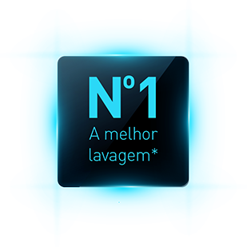

A melhor lavagem da categoria!*
Com tecnologias que facilitam seu dia a dia, as Lavadoras Panasonic tem a melhor eficiência de lavagem em água fria da categoria *. Ela lava melhor as roupas da sua família!
A Fernanda Lima passa por cada uma com seus anjinhos! Ainda bem que a Lavadora de Roupas da Panasonic quebra o maior galho. Lava com a melhor eficiência da categoria*, e agita suas roupas com a força das águas, dispensando agitador central.
*De acordo com eficiência de lavagem em água fria, segundo Tabela Inmetro de consumo/eficiência energética, para lavadoras de roupas automáticas abertura superior (top load), edição 162 de 01/11/2016.